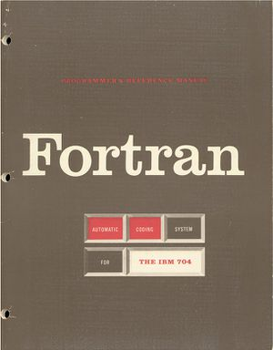

PARATRÁN
 De: La Frikipedia, la enciclopedia extremadamente seria.
De: La Frikipedia, la enciclopedia extremadamente seria.
«¡Anda, coño! Pero si FORTRAN puede significar formula translator»
~ John Backus sobre el PARATRÁN
Arcaico pero todavía en uso, se trata de un lenguaje de programación de alto nivel. Su nombre proviene del inglés, FORTRAN.
Historia
Fue ideado por Matusalén hacia el año -1957. Básicamente, lo que hizo fue traducir al seudocódigo. 3914 años después, un tal John Backus, ordenando la buhardilla, abrió el baúl de los recuerdos y encontró un misterioso libro, que contenía todos y cada uno de los algoritmos que pueden realizarse en seudocódigo inglés. No tenía título, pero en la dedicatoria podía leerse "para el translúcido". Backus creó un lenguaje de programación a partir del contenido de aquel libro, y como no sabía qué nombre ponerle, se acabó basando en la dedicatoria de Matusalén: lo llamó "FORTRAN". Una noche después de su publicación, Backus se despertó sobresaltado y pronunció su famosa frase, que se puede leer arriba. Si lo abres, un vector normal a él te atravesará.
Características
- No reconoce la 'ñ' de España, los símbolos '¿', '¡' ni las tildes (´).
- No es lo mismo LOL que LoL.
- No permite la declaración de arrays de dimensión indefinida.
Ejemplos de programación con PARATRÁN
PROGRAM Bucle_infinito
INTEGER::CONT
CONT=0
DO WHILE (CONT=0)
PRINT *,"Sacame de aqui!"
END DO
END PROGRAM Bucle_infinito
Clásico
PROGRAM EMO
PRINT *,"Adios, mundo!"
END PROGRAM EMO
Autor(es):
- Azulejos
- Cibercrank
- Dark temptation
- Gñapero Solitario
- Darth Dominus
Frikipedia 2005-2016, Licencia
GFDL 1.2 - Extraído por FrikiLeaks